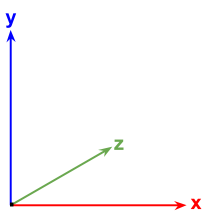
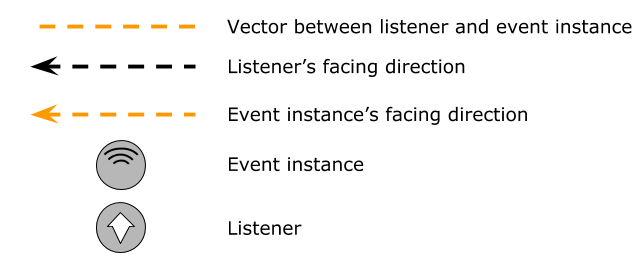
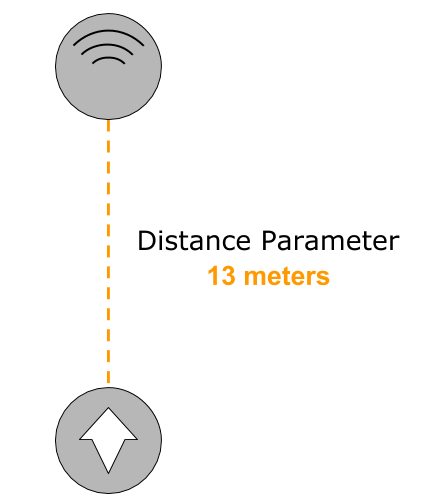
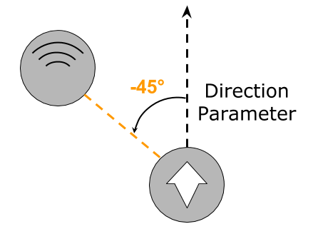
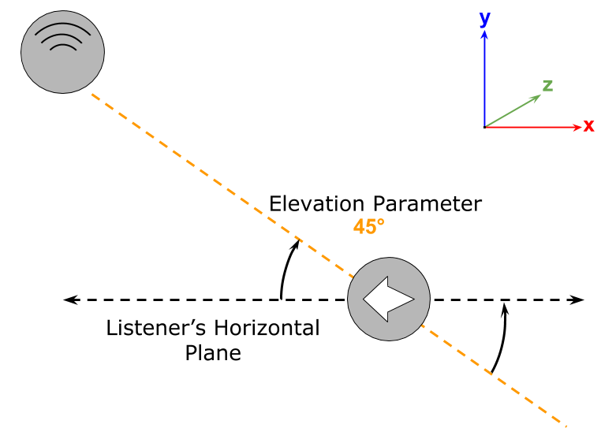
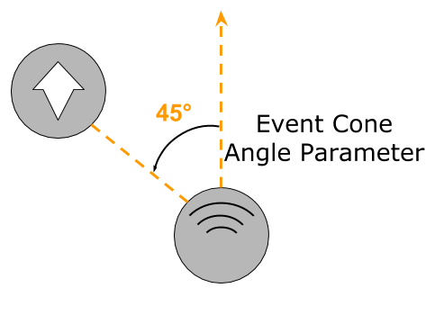
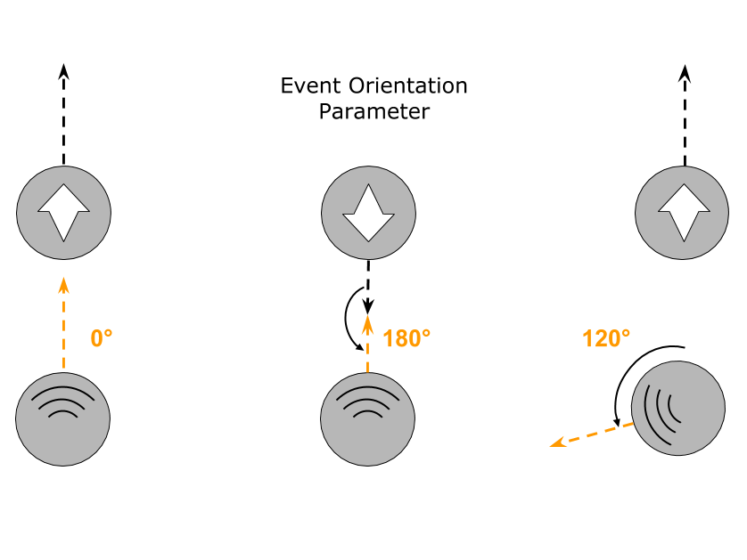

FMOD Studio User Manual 1.10
FMOD Studio offers several built-in parameter types to use when you are creating parameters.
The value of an instance of a built-in parameter type is updated automatically based on the spatial properties (set in FMOD_3D_ATTRIBUTES) of their associated event instance, relative to the listener. You cannot directly set values for built-in parameter types.
When auditioning in FMOD Studio, moving the event instance in the 3D preview tool, editing the value via moving the playback position in the parameter sheet, and adjusting the parameter dial, all update the 3D position of the event instance.
You can use built-in parameters for situations such as increasing the amount of reverb when an event instance moves further away, or simulating the directional output of a speaker by reducing the volume of an event instance when it is not facing the listener.
For information about adding parameters to events, please see the parameters section of the authoring events chapter.
For the purposes of setting event instance positions and listener positions (see Studio::EventInstance::set3DAttributes and Studio::System::setListenerAttributes respectively) in your game's code, FMOD Studio uses the 3D Cartesian coordinate system, with the x and z axes used to describe the horizontal plane, and the x and y axes used to describe the vertical plane.

Below is the legend for all diagrams used in this chapter.

The distance parameter type represents the distance between the listener and the event instance. It uses the same units of distance as the game engine.
When using a distance parameter, the range can be customized. At value 0 the event instance is the closest to the listener. A higher value represents greater distance.
When auditioning in FMOD Studio, moving the event instance in the 3D preview tool towards or away from the listener changes the value of the event's distance parameter.
Note that the game's distance factor, set by the distancefactor property in System::set3DSettings, does not have any effect on the distance calculated for a distance parameter. The calculated distance is based on the units used when setting the position of the listener and the event instance.

The direction parameter type is the angle between the direction the listener is facing and the direction from the listener to the event instance. A direction parameter only takes into account the listener's horizontal (xz) plane.
When using a direction parameter, its value represents the angle in degrees, ranging from -180° to 180°. 0° is positioned directly in front of the listener, -180° or 180° is positioned directly behind, -90° is positioned to the left of the listener, and 90° is positioned to the right of the listener.
When auditioning in FMOD Studio, moving the event instance in the 3D preview tool around the listener changes the value of the direction parameter.

The elevation parameter type is the angle between the direction the listener is facing and the direction from the listener to the event instance on the vertical (xy) plane.
Elevation is calculated as the angle between the plane formed by the forward and left vectors of the listener (noted as the "listener's horizontal plane") and the vector between the listener and the event instance. Note that the elevation does not take into consideration whether the listener is looking at the event instance.
When using an elevation parameter, its value is represented in degrees, ranging from -90° to 90°. At 0° is when the listener's horizontal plane matches the vector between the listener and the event instance. At 90° is when the listener's horizontal plane is directly below the vector between the listener and the event instance (ie. the event instance is above the listener), and at -90° is when the listener's horizontal plane is directly above the listener (ie. the event instance is below the listener).
An elevation parameter can be used in situations where it is important that event instances sound different if above or below the listener, such as when a player is in a World War I-era biplane.
When auditioning in FMOD Studio, moving the event instance in the 3D preview tool above or below the listener changes the value of the elevation parameter. You can do this by holding onto the Ctrl key and dragging the event instance.

The event cone angle parameter type is the angle between the direction the event instance is facing and the direction from it to the listener. Event cone angle only takes into account the horizontal plane (xy).
Unlike the direction parameter, in which the parameter's value is based on the direction from the listener to the event instance, an event cone angle parameter's value is based on the direction from the event instance to the listener. This is expressed in degrees ranging from 0° to 180°. At 0°, the event instance faces towards the listener and at 180° the event instance faces away from the listener.
Some sounds emit in a non-spherical manner, such as televisions or megaphones, and this parameter can be used to define playback behavior for these conditions. It is often used to define the size of the emission cone for an event.
When auditioning in FMOD Studio, rotating the event instance in the 3D preview tool changes the value of the event cone angle parameter.

The event orientation parameter type is the angle between the direction the listener is facing and the direction the event instance is facing.
If both the listener and instance are facing the same direction, the angle is 0°. As the listener and the event instance turn to face opposite directions, the angle will increase toward a maximum of 180°. The event orientation parameter only takes into account orientation on the horizontal plane (xz).
The event orientation parameter is useful when the event in question should be surrounding the listener instead of coming from a single point source, such as a wind ambience that sounds different depending on which way the listener faces relative to the wind direction.
When auditioning in FMOD Studio, rotating the event instance in the 3D preview tool changes the value of the event orientation parameter. Rotating the listener in the sandbox window will also change the value of the event orientation parameter.
